Aspectos técnicos:
Lanzamientos:
- Revés
- Tres dedos
- Hammer
Revés:
Es el lanzamiento típico y más fácil de realizar. Colocación habitual y la que ofrece mejor control y garantía de pase. Fase del movimiento, el cuerpo acompaña hacia adelante el movimiento del brazo y la muñeca, como si se diera un paso hacia adelante.Ideal para los saques de inicio porque ofrece mayor potencia que la posición habitual pero menos precisión
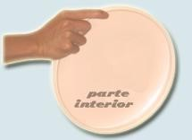 |
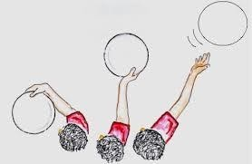 |
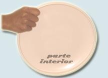 |
Tres dedos o lanzamiento anterior:
Proporciona al lanzador la posibilidad de lanzar por el lado opuesto a su revés, imprescindible para jugar ultimate.
Si se cierran los 3 dedos se mejora en potencia el tiro, pierde precisión.
Colocación de los dedos como muestra la imagen, el pulgar se apoya sobre la parte superior del disco y el índice y anular forman una “V” en la parte inferior del mismo, el primero más hacia el centro del disco y el otro sobre el borde.
Este tiro ofrece mayor control y garantía de pase.
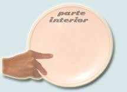 |
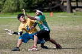 |
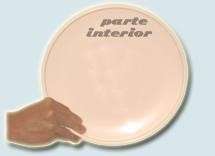 |
Hammer o martillo:
Este lanzamiento se caracteriza por tener menor tiempo de vuelo que los anteriores, por lo tanto llega más rápido a su receptor. El lanzamiento hammer con curva se caracteriza porque vuela con el lado cóncavo hacia arriba. El lanzamiento plano se caracteriza por la forma parabólica en su recorrido y su vuelo es de forma perpendicular.
Lo que se debe tener en cuenta de este tiro es el movimiento de la muñeca, la colocación del codo, y la inclinación del disco en el momento de lanzar.
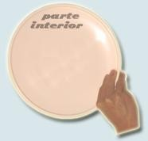 |
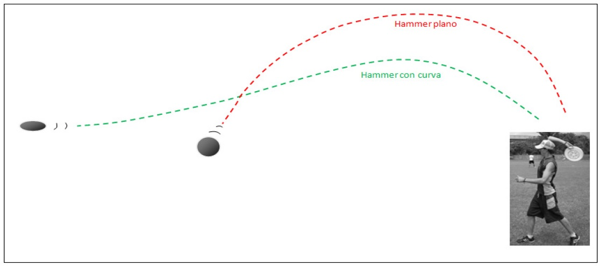 |
Recepciones:
- Pinza
- Con una mano
- En forma de palmada
Recepción de Pinza:
Esta recepción se emplea en lanzamientos que vienen muy rápido porque protege del impacto facial del frisbee o de un deslizamiento durante un salto. Consiste en sujetar el frisbee con ambas manos en forma de pinzas a la altura del pecho o el rostro.
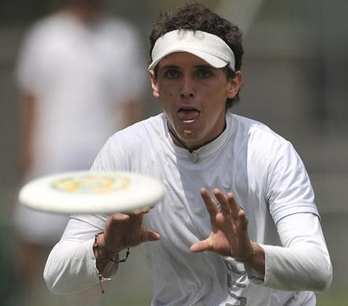
Recepción de una mano:
Se utiliza para lanzamientos muy altos o que vienen muy alejados de la línea media del cuerpo receptor. Este tipo de recepción casi siempre se vale de una carrera, salto, inclinación o deslizamiento.
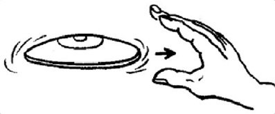
Recepción en forma de palmada:
Consiste en atrapar el disco en forma de aplauso, con ambas manos, para asegurar el frisbee.
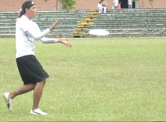 |
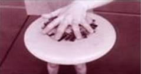 |
Imágenes tomadas de Ultimate Frisbee - juego y metodología del aprendizaje disponible en Uruguay Educa